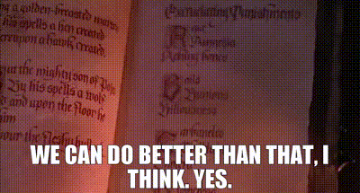

Act Early, Not Fast: Why Small Business Owners Need to Rethink How They Handle People Problems
You've probably heard the phrase: hire slow, fire fast. It became a kind of mantra in startup culture, and gives the impression of decisive leadership. And while the "hire slow" part still holds up, the second half has actually caused a lot of damage in small businesses and people-first workplaces.
"Fire fast" sounds bold. In practice, it often means skipping the conversation. It means letting something fester, avoiding the awkward feedback, hoping things improve on their own . And when they don't, the leaders make a swift and sudden exit decision that blindsides the employee and leaves the team wondering who's next.
That's not decisive leadership. That's delayed avoidance followed by a dramatic exit.

There's a better approach. And it starts much earlier.
The goal isn't to act fast. It's to act early, before a small issue becomes a big one.
The Problem With "Fast"
Speed is seductive because it feels like action. But in people management, fast decisions made late are almost always the result of slow inaction earlier.
Here's how it usually plays out: A manager notices something's off. Performance is slipping, and behaviour is starting to affect others. But instead of addressing it, they wait and they hope it resolves. They tell themselves it's probably a phase. (See last week’s blog post!)
Time passes. The issue compounds. Other team members notice. Morale starts to tank. And eventually, the manager reaches a breaking point, and “acts fast.” That usually looks like an abrupt conversation, followed by a sudden exit and an employee and team left confused.
The speed at the end doesn't undo the slowness at the beginning. It just makes the ending messier than it needed to be.
What "Early" Actually Looks Like
Acting early doesn't mean being trigger-happy or hypervigilant. It means having the courage to have the conversation before it becomes bigger.
What does that look like in practice?
Let’s say you notice someone seems disengaged. Instead of waiting for their performance review, you check in. Nothing formal - you’re not giving them a written warning or anything serious. Instead, you just initiate a human conversation: "Hey, I've noticed you seem a bit flat lately. Everything okay?"
Or let’s say see two team members avoiding each other. Instead of hoping it blows over, or that you’re imagining it, you address it directly with each of them, separately, while it's still manageable.
Or maybe someone who is usually a rock star starts to have lower work quality for several weeks running. Instead of documenting in silence and “building a case,” you sit down with them and ask what's going on.
None of these are necessarily HR events. They might be, at some point. But for now they’re just conversations. And in small businesses especially, they're the difference between a team that trusts you and a team that fears you.
Most HR issues aren't HR issues at first. They're communication issues that were left too long.
Why Small Business Owners Struggle With This
In a small team, everything is personal. Chances are your employee is also your friend. You hired them. You know their personal and family situation. You care about them as a person.
That proximity makes early conversations feel higher stakes than they are. You worry about damaging the relationship. You don't want to seem like you're overreacting.
But the relationship is actually more at risk when you stay silent. People can feel when something's wrong. When you don't address it, they fill the gap with their own interpretation, and that’s usually never good.
Acting early is actually an act of respect. It says: I see what's happening, I take it seriously, and I think you deserve a real conversation rather than a slow build toward an outcome you never saw coming.
A Simple Framework for Acting Early
People think that having HR or a performance management process is complicated and overly engineered. But you don't need a complex HR system to act early. You need three things:
- A habit of naming things when you first notice them, not when they become undeniable
- The courage and willingness to have an imperfect conversation rather than waiting until you can have a perfect one.
- A basic understanding of what a supportive, clear conversation looks like, so you don't either avoid it or overcorrect into a formal warning when a check-in would do.
That third one is where most of us get stuck. Not because they don't care, but because nobody ever taught them how. They weren't trained managers. They were good at their craft, and suddenly found themselves responsible for a team of people.
The Real Measure of Good Leadership
Decisive leadership isn't about how quickly you can end something. It's about how early you're willing to start a difficult conversation.
The best leaders aren't conflict-free. They address things when they're still small. They check in before check-ins are urgent. They give feedback before it accumulates into a performance issue.
And when they do eventually face a hard call, it's never a surprise to anyone. Because the conversation happened long before the decision.
Decisive leadership isn't about how quickly you can end something. It's about how early you're willing to start a difficult conversation.
Final Thought
Hire slow still makes sense. But instead of fire fast, try this: act early, act clearly, and act like the kind of leader your team deserves.
The small conversation you're avoiding right now is almost certainly easier than the one you'll have to have if you keep avoiding it.
Want support navigating people challenges in your small business?
Book a free consultation to talk through what's on your plate — no pressure, just clarity.